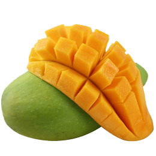

tentangbuah.com
Mangga
Mangga adalah nama sejenis buah, demikian pula nama pohonnya. Mangga termasuk ke dalam genus Magifera, yang terdiri dari 35-40 anggota dari famili Anarcadiacae
Nama "mangga" berasal dari bahasa Tamil, mankay yang berarti man "pohon mangga" + kay "buah". Kata ini dibawah ke Eropa oleh orang-orang Protugis dan diserap menjadi manga (bahasa portugis) mango (bahasa Spanyol dan Inggris) dan lainnya.
Mangga berasal dari daerah di sekitar perbatasan India dan Burma, dan mangga telah menyebar ke Asia Tenggara sekitar 1500 tahun yang silam. Buah ini dikenal pula dalam berbagai bahasa daerah seperti pelem atau poh (Jawa), Poh (Bali), dan Paok (Sasak)
Khasiat Mangga
- Menjaga Kesehatan Mata
- Melindungi Dari Kanker
- Menurunkan Risiko Diabetes
- Menjaga Kesehatan Kulit dan Rambut
- Meningkatkan Kekebalan Tubuh
Tabel Harga
| Jenis Mangga | Harga | |
|---|---|---|
| Per Kilo | Per Biji | |
| Mangga Manalagi | 50.000 | 5.000 |
| Mangga Fuji | 60.000 | 6.000 |
| Mangga Anna | 70.000 | 7.000 |
| Mangga Merah | 55.000 | 5.500 |